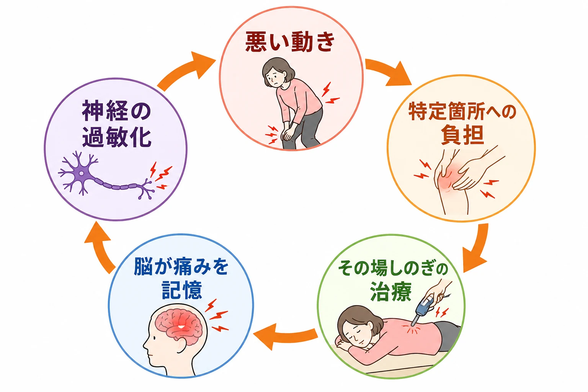
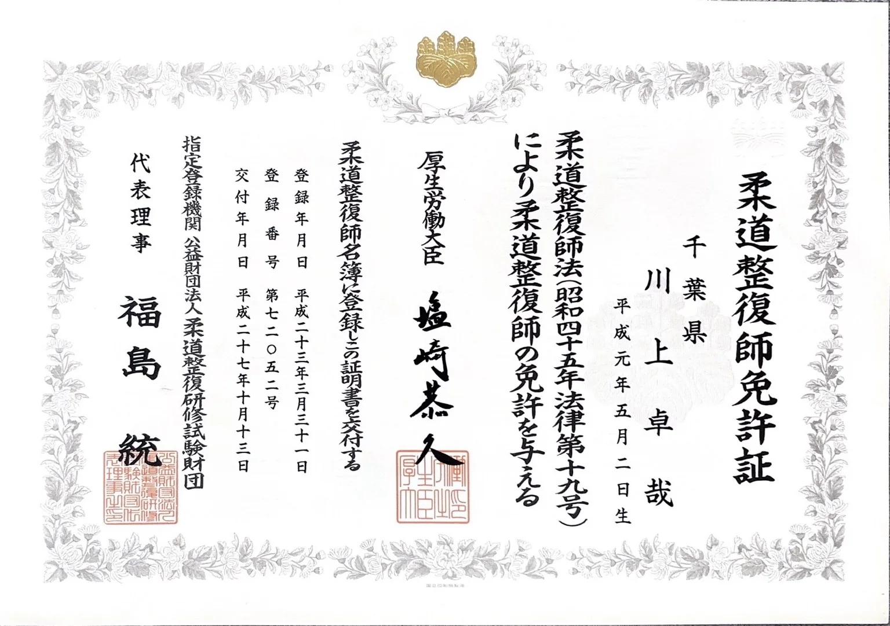
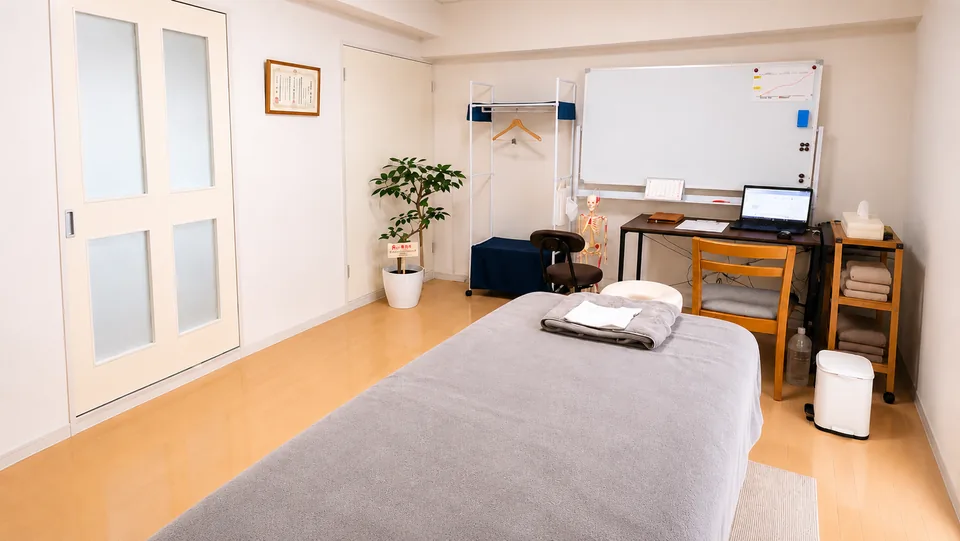

強い腰痛と長年の膝痛で来院。施術とセルフトレーニングを続けながら、歩くつらさと向き合われたお声です。
詳しく見る
それは慣れたのではなく、諦めているだけかもしれない。
もう一度、自分の体と向き合う時間をつくりませんか。

初回限定のご案内
カウンセリング・状態確認込み まずは相談だけでも大丈夫です。
含まれる内容
無理な勧誘はありません。ご相談だけでも大丈夫です。
SYMPTOM GUIDE
痛む場所や、病院で伝えられた症状名に近いページをご覧ください。
どこへ行っても良くならなかった方が、 当院で歩く喜びを取り戻しています。
つらい足腰のお悩みは、 私にお任せください。
大丈夫です！ご安心ください。ご相談に来られた方のお声があります。

強い腰痛と長年の膝痛で来院。施術とセルフトレーニングを続けながら、歩くつらさと向き合われたお声です。
詳しく見る
坐骨神経痛や膝・腰の痛みでご相談。身体が軽く感じられたことや、丁寧に見てもらえる安心感をお話しくださいました。
詳しく見る
ねんざ後の全身的な痛みや、腰・足・首肩のつらさでご相談。ご自身の身体と向き合う大切さを感じたお声です。
詳しく見る
整形外科に通っても続く膝関節痛でご相談。階段や歩行への不安について、身体の状態を相談する大切さをお話しくださいました。
詳しく見る写真は左右にスライドできます


MOVIE
なぜ治らないのか
何度も同じ痛みを繰り返す背景には、筋肉の働き方、足元からのゆがみ、そして毎日の動きを覚えてしまう脳と神経のクセがあります。
理由 01

筋肉がガチガチになるのは、仕事をズル休みしている「サボり筋」がいるから。そのせいで他の筋肉が24時間働き続け、悲鳴を上げています（過労筋）。
本当に必要なのは、揉むことではなく眠っている筋肉を目覚めさせること。当院のMSMメソッドは「緩める」と「働かせる」を同時に行い、動いてもグラつかない体を作ります。
理由 02

家と同じで、体も「土台」が傾けばすべてが歪みます。
足首の関節が硬くロックされると歩行の衝撃を吸収できず、その上の膝・骨盤・腰へとねじれが伝わります。
このドミノを根本（足元）から止めない限り、腰や膝をいくら触っても意味がありません。
理由 03

一時的に整えても、普段の歩き方や立ち方のクセがそのままだとすぐに逆戻りします。
さらに痛みが長引くと、脳が「痛むのが当たり前」と勘違いし、神経が過敏になってしまいます。
当院では独自の運動療法でこの「脳の痛みの記憶」をリセットし、正しい体の動かし方を神経に再学習させます。
MSMメソッド 3ステップ
その場しのぎの施術ではなく、「原因を断つ」3つのステップで根本からアプローチします。
STEP 01
STEP 01 — Mobility（緩める）

日々の悪い動作の繰り返しで使いすぎているガンバリ筋を緩めて、サボり筋が働くための土台をつくります。
STEP 02
STEP 02 — Stability（鍛える）

正しい動作に必要なサボり筋を、1つずつ使えるようにします。ただ鍛えるのではなく、歩く・立つ・階段動作につなげる準備を行います。
STEP 03
STEP 03 — Movement（使える）

使えるようになった筋肉を、歩き方・立ち上がり・階段動作に落とし込みます。足腰に負担をかけにくい体の使い方を身につけます。
繰り返しに、終止符を
そんな繰り返しに終止符を打ちたい方は、ぜひ当院のMSMメソッドを体感してください。
無料相談・ご予約はこちらREASONS
特徴1
FEATURE 01
腰や肩を触らない？
レントゲンに写らない根本原因を初回に突き止めます
多くの患者様が「腰が痛いのに腰を触らないことにびっくりした」「原因がお腹の筋肉にあると分かった」と驚かれます。
当院では、痛みのある部分をただマッサージするのではなく、初回にしっかりと時間をかけて全身をくまなく検査。
レントゲンには写らない筋肉や筋膜の硬さなど、歪みの相互関係から「痛みの本当の引き金」を明らかにします。
特徴2
FEATURE 02
国家資格保持者によるマンツーマン施術。
途中で担当が変わる不安はありません

整形外科、接骨院、整体院などで14年にわたり様々な臨床経験を積んできた、柔道整復師（国家資格）を持つ院長自らが施術を担当します。
通院の途中で担当者が変わり、何度も同じ説明をさせられたり、技術にムラがあったりするようなストレスや不安はありません。
特徴3
FEATURE 03
バキバキしない！医学的根拠に基づいたアプローチで
痛みを根本から見直します
当院では、日本整形外科学会でもその有効性と重要性が推奨されている「運動療法」をベースにした独自の【MSMメソッド】を導入しています。
ただ筋肉をほぐすだけでなく、弱って使えなくなっている筋肉を正確に動かし、関節を正しい位置へと定着させる医学的根拠に基づいた施術です。
その場しのぎではなく、体の使い方まで一緒に整えていく方針です。
特徴4
FEATURE 04
長年諦めていた重度な腰痛・坐骨神経痛・膝の痛み・シビレにも対応
当院は、どこに行っても良くならなかった重度の腰痛、坐骨神経痛、ヘルニア、変形性膝関節症など、「足腰の慢性痛」の改善を目指す方を多く見てきました。
長年、痛み止めを飲み続けたり、何軒もの治療院を渡り歩いて諦めかけていた患者様からも、「ここに来て本当に良かった」と信頼をいただいています。
特徴5
FEATURE 05
動画をまねするだけでは分からない、
あなたの身体に合ったセルフケアを個別に指導
当院では、施術を受け続けることをゴールにしていません。ご自身の身体を理解し、不調を自分で整えられるようになることを目指します。
YouTubeやSNSのストレッチ情報は多くありますが、身体の状態に合わない運動は腰や膝の負担を増やすこともあります。そのため当院では、身体の動きや症状を確認したうえで、今の状態に合ったセルフケアを一人ひとりにお伝えします。
施術とセルフケアを組み合わせながら、最終的には通院に頼らず、ご自身でカラダを管理できる「卒業」を目指します。
特徴6
FEATURE 06
周囲の目を気にせず
リラックスして何でも相談できる環境をお約束

事前にご予約をいただくため、院内で長くお待たせしないように時間を確保しています。
アルコール除菌や衛生管理を徹底した、清潔で綺麗・落ち着いた雰囲気の個室で施術を行います。
他のお客様と時間が重なりにくいため、デリケートなお身体のお悩みも一対一で安心してご相談いただけます。
初回の進め方
お悩みと
生活動作の確認
いつから、どこが、どんな時につらいのかを丁寧にお伺いします。

姿勢・歩き方・
関節の動きの確認
お体の状態を検査し、原因を見つけていきます。

施術方針の説明
検査結果をもとに、わかりやすく今後の方針や見通しをご説明します。

不安や疑問を一つずつ解消しながら、安心して通える環境を大切にしています。
説明なしに
強い施術をしない
お体の状態を確認し、同意を得てから施術を行います。

無理な運動を
押しつけない
お一人おひとりの状態に合わせて、できることからご提案します。

その場で長期契約を
迫らない
必要な方に必要なご提案をします。ご納得いただいてからご検討ください。

気になることがあれば、どんなことでもお気軽にご相談ください。

「先生に出会えて良かった。」
「もっと早く来ていれば良かった」と
多くの方から感謝の声を頂いています。まずは一度試してください。
足腰のつらさを一緒に整理し、動きやすい身体づくりをサポートします。
近日中まで
6名様限定割引
残り2名様
LINEからご希望日時を送ってください。空き状況を確認して、こちらから返信いたします。
【受付時間】9:00〜19:00 【定休日】日曜
施術中は電話に出られないことがあります。後ほど折り返しお電話いたします。
| 時間 | 月 | 火 | 水 | 木 | 金 | 土 | 日 |
|---|---|---|---|---|---|---|---|
| 9:00〜19:00 | ● | ● | ● | ● | ● | ● | - |
完全予約制／定休日：日曜
詳しい道順・建物入口・駐車場については、アクセスページでご確認いただけます。
最後に、ご相談はこちらから
メールフォームからお名前・お悩み・ご希望日時をお送りください。確認後、折り返しご連絡いたします。
送信が完了しました。
アクセスを確認する予約前に特に多い不安だけを、短くまとめました。